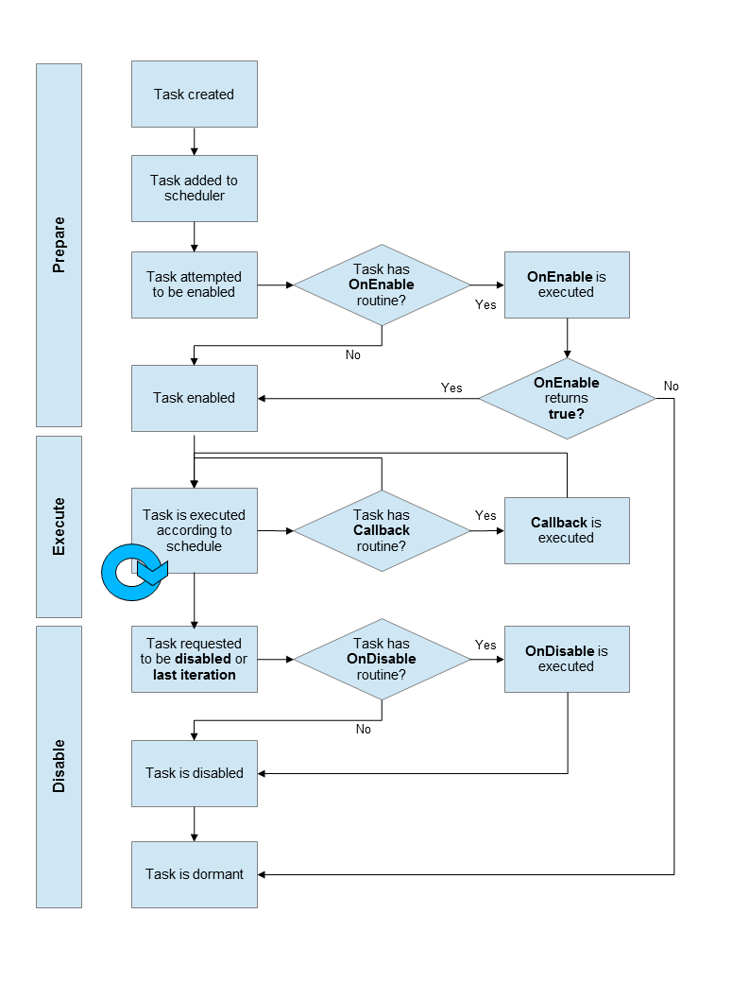

Threads and memory analysis
All tasks are performed via threading. If more threads are run than the CPU has cores then our threads are time-sliced. The amount of time that each thread gets is dependent on the priority of the thread. After the time-slice has passed the thread must give up the core to another thread. A built-in interrupt handler can save the state of the thread while the execution is paused. In some systems the interrupt handler has a standard interrupt time. Interrupts have priority over the main program, the main program is assigned whatever time is left over.

1.1 Priorities
The following threads were given priority as follows :
| # | Priority | Thread |
|---|---|---|
| 1 | DisplayUpdateTask Priority - 1 | Description: Updates the LCD display |
| 2 | MsgOutTask Priority - 2 | Description: Receives message from queue and prints to serial monitor |
| 3 | ScanKeysTask Priority - 3 | Description: Monitors keys for changes and stores new values in the keyArray variable. |
| 4 | DecodeMsgTask Priority - 4 | Description: Allows for changes to keys based on messages sent on the serial monitor. |
1.2 Time assignment
The scheduler will ensure that every thread gets a time slot and will often give more time to higher priority threads. Since interrupts are given priority over the main execution, we have reduced the number of interrupts. The image below displays the logic for each task
